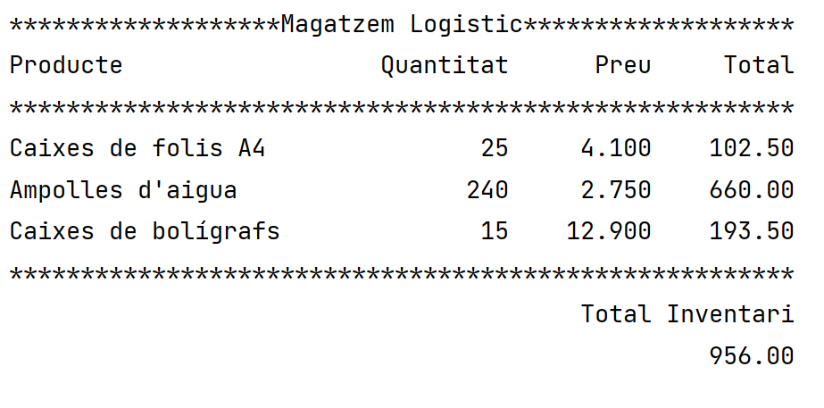

Projectes
Tiquet de compra
El projecte del tiquet de compra consisteix en disenyar amb python un programa q introduin dades com productes, preu, cuantitat, etz, doni un tiquet.
Per fer el projecte es necesitar saber...
- Com utilitzar variables
- Com utilitzar els decimals
- Com ajustar el text

Altres projectes:
- Curriculum pagina web
- Presentació sobre transaccions
- Programa SimuPorc